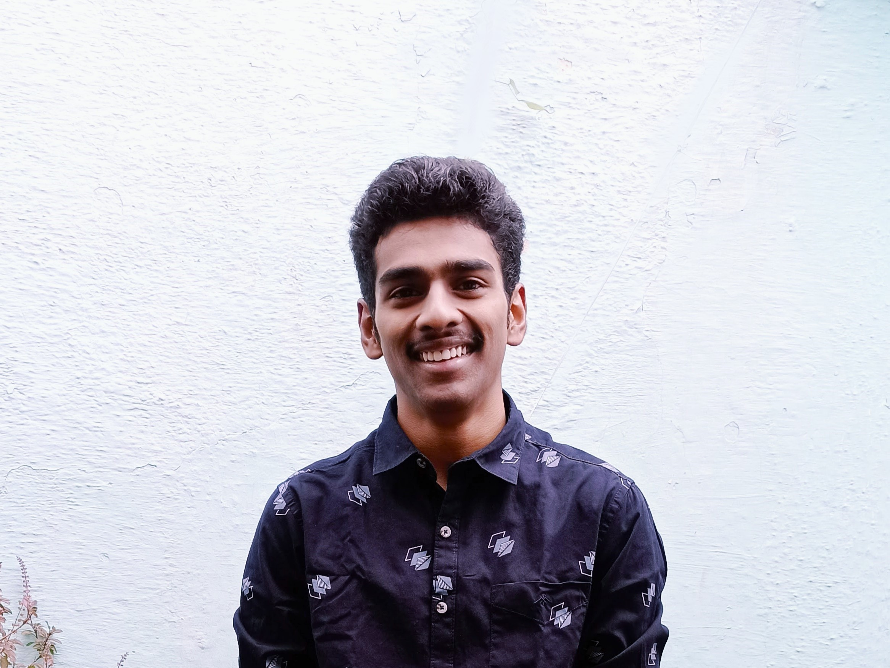

Full Stack Developer | Python Developer
Bangalore, Karnataka, India
monishm1065@gmail.com
+91 7619418883
Technical Skills
Languages: Python, C, C++, SQL, PHP
Frontend: HTML, CSS, JavaScript
Backend: PHP
Database: MySQL
Tools: Git, GitHub, VS Code
Other: Linux, Networking Basics, System Troubleshooting
Languages
English
Tamil, Kannada
Hindi, Telugu
Full Stack Developer and Python Developer with hands-on experience in building and deploying web applications using PHP, MySQL, JavaScript, HTML, CSS, and Python. Strong foundation in programming with additional knowledge of C, C++, and SQL, along with problem-solving and logical thinking skills. Developed a multi-purpose employee management portal supporting attendance, helpdesk, and administrative workflows. Currently working as a Network Support Engineer while actively contributing to development and automation initiatives.
Developed a Python-based voice assistant to assist users with basic system operations using voice commands.
Provided technical troubleshooting and customer support for internet, video, and phone services.
Besant Technologies Training Center
Indo Asian Academy Degree College
Sri Sai Sathya Narayana College (At present known as 'New Baldwin International College')
New Baldwin Residential School